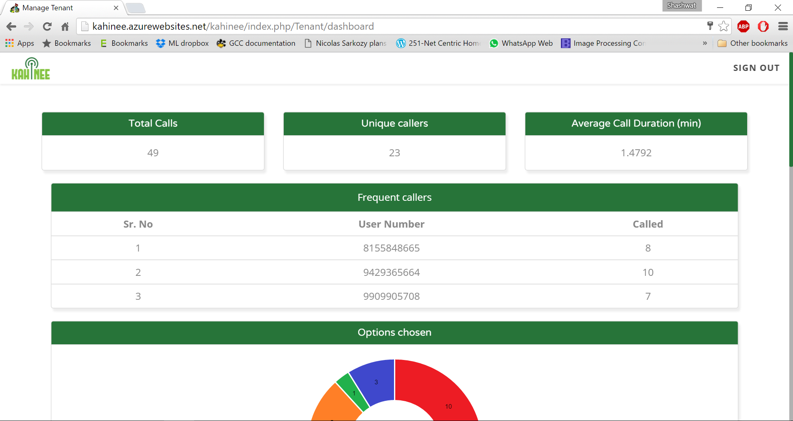
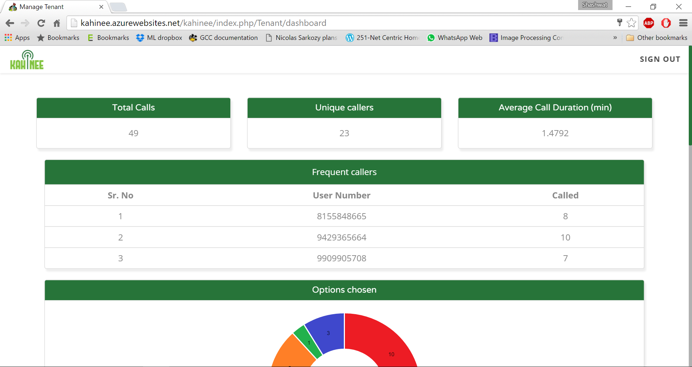

Initially, we were looking at a variety of ideas that used image processing. We intended to develop a low cost device to check the eye number in rural areas as well as an intelligent android based application that gave you real time information about the micro-organisms or bacteria present on any given location. We believed that they will be accepted and absorbed by the rural public health centres as there might be a lack of devices that could be effectively used to cater to the health requirements of the rural citizens. We were proved wrong when we visited the public health centres of villages in and around Ahmedabad.
Problem Identification
1. Initial Ideas and assumptions
2. Field Research
We gathered the following information from our extensive and thorough field research conducted in the villages in and around Ahmedabad. We met doctors who had their private clinics as well as doctors, nurses and micro-biologists working at the Public Health Centre. We visited the government hospitals in the city as well as talked to community health workers. We also interviewed a lot of rural residents hailing from varying backgrounds. We realised the following points:
1) Majority of people in rural areas are tobacco addicts. They are addicted to such an extent that they are now unable to even open their mouths wide enough to be able to eat normal food.
2) Child marriages and young mothers are a reality.
3) There is an increasing desire to learn about healthcare as well as save money for the same.
4) Illiteracy is prevalent and Internet is a myth.
5) Smart phones or basic phones are available in every household.
6) PHCs and CHCs are equipped with medical devices.
3. Needs
We realized the following needs of the rural residents:
1) Desire to learn about health issues and steps to be taken but without the need to be literate.
2) To want to talk about their symptoms in their local language and without inhibitions.
4. Problem Statement
Educate rural area residents as well as community health workers about maternal healthcare, child healthcare, nutrition and anaemia using voice assisted modules without the need to be literate or have internet access.
5. Approach:
Kahinee is an IVR/VAS system intended to impart education and awareness in rural areas about maternal and child care, nutrition, anaemia and government health policies as well as facilities. We analysed and discovered in our field visits to a number of villages that while there is an increasing awareness about different healthcare facilities and a desire to learn, there are few means of access to this information for the common rural area resident. Adding to that, illiteracy is still majorly prevalent because of which learning about health issues from the print medium is not a viable option.
A toll free number shall be provided to rural residents using which they can learn as well as solve their queries pertaining to different health issues in their local language via audio notes and short audio plays. Kahinee aims to impart healthcare education to ASHA workers, PHCs’ doctors (Primary Healthcare Centre), nurses and rural patients. ASHA workers are selected from the rural citizens and their goals are to help residents understand health issues as well as give them the medicines recommended by the doctors at the PHC. Our system uses creatively designed audio plays and scripts to be able to train them about varied health issues.
The phase one implementation of this system consists of educating and spreading awareness through short engaging audio plays and stories. The phase two of this system will consist of a service using which people in rural areas can leave an audio note describing their symptoms in their local language. Kahinee will send these audio notes to urban doctors. The phase one pilot test has been successfully implemented in the Jhagdia district of Bharuch with Harvard based NGO - Barakat Bundle (www.barakatbundle.org ), SEWA Rural and IIPH.

Project guided by Professor Tapan Parikh, School of Information, UC Berkeley
Need:
India is a country with a culture of “spoken messages” instead of written/typed messages. The current mobile alternatives encourage you to type and send your messages. Also, all of them need internet to work. Awaaz De's mobile networks need no internet and you do not need to type/write. All you need to do is leave your voice message and respond to other messages vocally as well. Education is crucial for any nation’s development. Making primary education accessible for all, including kids from low income backgrounds is crucial for any society to evolve. One of the major hurdles that teachers face while teaching in municipal schools is an unfortunate lack of certain resources. If they face a problem while interacting with a child then they have nowhere to go to. This gave rise to the need for a teacher's training module.
Approach:
Using the teacher’s training module we give teachers a virtual counsellor. They can hear and gain expertise in student interaction. Our main goal while working as interns at Awaaz De was to come up with a fruitful mobile network for the TFI (Teach for India) fellows and the municipal school teachers whom they closely work with. We initially read a lot about TFI, their work ideals and methodologies. We realised that theirs was an interesting concept in which they got extremely well educated TFI fellows to teach primary kids as well as inspire the municipal school teachers present there (the ripple effect).
For a start we talked to Mr. Irfan Lalani, a TFI fellow who was also teaching at “Shwaas” NGO. We went to one of their session during which they were teaching children from the nearby slum areas about problem solving and design thinking. We observed the problems they face while teaching by attending a number of their sessions. Also, we met and talked to a number of TFI fellows. After talking to them and also interacting with the AMC education officer, we realized that firstly instead of targeting the municipal school teachers who lack in motivation, we should begin with the TFI fellows. We realized that the TFI fellows were very well educated. Thus, they needed less help with general subjects and needed more assistance/guidance while handling certain psychological issues that the children faced.
Most of the children from these slum areas came from difficult situations at home and bore witnesses to alcohol abuse, domestic violence and many other social evils. Thus, we decided that we should focus on psychological issues that these children face and ways through which they can be taught using certain specific interaction and teaching methods in spite of such issues. So we made two pools of students. One pool consisted of primary children who might suffer from disorders like ADHD (Attention Deficit Hyperactivity Disorder) while the other pool consisted of teenagers who might suffer from depression, peer pressure etc. Also instead of directly helping such students using an active line we thought we should start by educating teachers and parents through a passive line first. We met leading Psychiatrist Mr. Prashant Bhimani at his clinic here in Ahmedabad. He along with his intern told us how they would also gladly like to participate in one such active line in the future. His intern shed further light on ADHD. After this we started reading psychology guides and books available to learn more about ADHD. We finally came up with a short and fun script on ADHD. The script talked about the symptoms and ways of teaching such kids through a skit narrative.
Around the same time we met Rohini Ma’am, she is also a TFI fellow who works closely with kids dealing with psychological disorders. She had a beautiful point to share with us that our script should never directly say the word “ADHD” or for that matter any disorder’s name. She said that this encouraged teachers to label the children based on their disorder and these labels did far more harm to a child’s psyche than the disorder itself. So we worked again on our script and gave it a more positive title. Now though the script actually talks about ADHD and more effective interaction and teaching methods, the script has nowhere the direct mention of the term “ADHD”. Also now the title reads as “More effective interaction and teaching methods”. We are grateful to Rohini Ma’am for helping us add this fine but extremely important and beautiful detail.

Project mentor: Professor Mehul Raval, SEAS, AU
1. Introduction
Sasaki Database consists of the carcinogenicity results obtained as a result of treating the DNA obtained from different mice organs (e.g. colon, liver, stomach, brain, bone marrow and kidney) with different chemical compounds. The specific chemical compounds have been encoded according to their groups. The important input parameters given are compound I.D., compound name, route (i.e. If the compound has been introduced orally or through intravenous routes), strain (i.e. Types of mice like ddy and winstar), number of sampling hours and the dose of that particular compound. The outputs obtained are the comet essay tail lengths observed for the different organs' DNA. The DNA is negatively charged. It is put between charged plates and the compounds are introduced on it. Depending on the carcinogenicity of the introduced compounds, the DNA shows fragmentation. These fragments being negatively charged get attracted to the positive plate and hence end up leaving behind a tail.More the fragmentation, the longer is the tail length observed. Thus, this gives us an idea of the carcinogenicity of the introduced compound.
2. Keywords
Carcinogenicity
DNA
Comet essay
Tail length
Linear Regression
Logistic Regression
3. Problem Statement:
The goal was to predict the missing comet essay tail length values using the tail length values already given for the different compounds and organs.
4. Solution
The compounds were encoded using their IDs. The strain and route values were encoded as well; the two kinds of routes i.e. “ip” and “op” were encoded using 0 and 1. All the five parameters i.e.Encoded compounds, strains, routes, sampling time and sampling dose were taken as input parameters. Each of the tail length value columns for the different organs were considered one at a time as an output for training the machine and predicting the missing values for that particular organ in consideration. Non linear and linear regression was used to predict the missing values. Also all input parameters were scaled down using their mean and maximum value.
5. Model:
The linear regression model used, tried to fit a line through the set of the given values and then used this best fit to predict the missing values.
The non-linear regression fit used the sigmoid function( i.e. 1/(1+x^theta) where theta is the array of all input parameters) and predicted the missing values.
The learning rate-alpha and the number of iterations were selected separately for each organ.
6. Testing
Once the values were predicted using a certain algorithm, in order to check their accuracy the set of already given values was divided in a ratio of 70/30, where 70 values were used to train the machine and predict the rest 30 values. Later these predicted 30 values were cross checked with the actual lab answers already given by Sasaki for those 30 inputs.
Representational Image for explanation.
Source: http://www.cancerworld.org/Articles/Issues/41/March-April-2011/e-grand-round/457/Treatment-of-triple-negative-breast-cancer.html


Aim:
The project consists of an android application that communicates with a micro controller using a Bluetooth module. This micro controller then sends appropriate commands to switch the fan and light ON/OFF along with controlling fan speed. The main goal therefore is to allow the user to control lights and fans with a simple android application without actually having to stand up.
Target Users:
The target users of this product are the elderly and the handicapped. As our target users face difficulty in standing up every time they want to control their lights or fans, this product aims at making their life more comfortable by giving the controls in their hands using an extremely “simple to use” android application.
Why Bluetooth not wifi ?
Bluetooth is a weak protocol and security is not that good. On other hand, wifi is a very secured protocol. Moreover, Bluetooth can only be used for a line to line communication but wifi can be used for a larger range using which we can access out gadgets remotely as well. However, our target users are Indian citizens who have limited access to wifi. Also, android phones that provide bluetooth connectivity are readily available in India. Besides this, Bluetooth modules are much cheaper than wifi modules, so the total production cost decreases significantly. Moreover, our goal of covering a 3 BHK home is achieved using bluetooth modules. Thus, bluetooth is ideal for our target users as it is readily available, cheaper in price and also serves the main purpose of approximately covering a 3 BHK home. Bluetooth is a communication protocol which is specially used for networking in smaller areas. It keeps transmission power extremely low and thus helps in saving battery power. Bluetooth communicates on a frequency of 2.45 gigahertz which is approved for ISM (industrial, scientific and medical) use. The range provided is 10 meters (32 feet) without intervention of other interfaces between the two connected devices.
Types of modules with their basic functionalities:
1. Android Bluetooth application- User sends commands using the application
2. Atmega32 ( AVR series micro-controller)- The micro controller receives the commands sent by the user using the Bluetooth module. It also has a program loaded in its memory which helps it to decide which signals need to be sent in return for the command received.
3. The 230V AC to 5V DC convertor- Uses a transformer and majorly the 7805 IC. The micro controller needs 5V DC to operate which is provided by this module.
4. Bluetooth module- For receiving signals from the mobile phone and transmitting the signals to the MCU.
5. Relay switch for light- As soon as the micro-controller sends the high signal, there is an internal inductor inside the relay which creates a strong magnetic field around it. Thus the relay acts like an electromagnetic switch which establishes the connection and makes the bulb glow.
6. Relay switch for fan along with Fan speed control- Besides simply connecting the relay which acts like an electromagnetic switch for switching the fan ON/OFF, we have also used a TRIAC for fan speed. TRIAC is a thyristor (Silicon Controlled rectifier) that acts like a switch and MOC3021 zero detector.
7. AC supply box- A box that contains headers which branch out the AC supply of 230V to all the above modules according to necessity.

Worked (in a team of 4) with Mr. Coen, a design researcher from Holland, for his project on developing a low-cost compact washing machine that runs without electricity. The user group targeted was low-income households in India who have space as well as electricity problems. Designed a questionnaire and conducted user survey and analysis from field visits to a number of low budget households.
Image Reference: http://changeclub.nl/wp-content/uploads/2014/09/Hyperwash-01.jpg

1) We identified whether a given sequence is a Cyclin protein or not using support vector machine (SVM). Cyclin proteins are a family of proteins that control the cell progression.
2) The features used for classification were Amino Acids (20 features), Dipeptide bonds (400 features), Secondary Structure Composition (SSC), Position Specific Substitution Matrix (PSSM) Composition and Hybrid composition.
3) We carried out this classification using Linear, Polynomial, RBF and sigmoidal kernels after which we compared the results obtained from the different kernels.

We worked on face detection for real time data streaming. We initially started with the Viola and Jones approach for face detection. Later, siting efficiency issues we worked with several approaches for face detection like the CAMshift algorithm and face detection using skin detection. We finally decided to use the KLT algorithm for face detection. In our report we discussed the KLT algorithm along with the other algorithms that we worked with. We also discussed our results and analysis of the same.
1) Introduction
The subject of face recognition is important because of the following main reasons:
1) Practical importance of the topic i.e. security
2) Theoretical interest from cognitive scientists.
Our main goals for the face recognition project were:
1) Accurate Face Detection
2) Speed or Processing time
3) Novelty of the approach
2 ) Proposed Methods
2.1) KLT and Eigenfaces
Algorithm to track a single face
Step 1: Get an input frame.
Step 2: Detect face using Viola and Jones.
Step 3: Draw a polygon around the identified face.
Step 4: Detect Eigen features in the polygon.
Step 5: Initialize a tracker to the Eigen features.
Step 6: Store the features in a variable.
Step 7: Get a new frame, and repeat Step 2 to Step 4. If no new frame found go to Step 13.
Step 8: Match new Eigen feature points with the stored feature points.
Step 9: If features are found then go back to Step 5 else go to Step 8.
Step 10: Estimate the geometric transformation between the feature points.
Step 11: Apply transformation and return the frame with a polygon around the face.
Step 12: Go to Step 7.
Step 13: Stop.